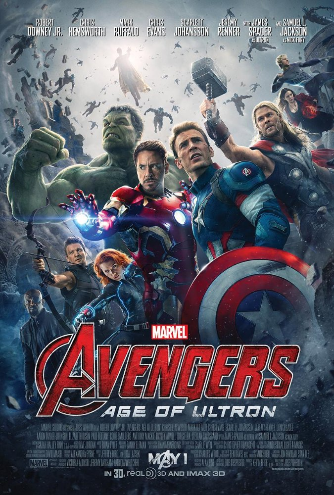

Avengers: Age of Ultron 2015
Avengers: Đế chế Ultron ( Avengers: Age of Ultron) là một phim của điện ảnh Hoa Kỳ được xây dựng dựa trên nguyên mẫu các thành viên trong biệt đội siêu anh hùng Avengers của hãng Marvel Comics. Phim được sản xuất bởi Marvel Studios, phát hành bởi Walt Disney Studios Motion Pictures và là phần tiếp theo của siêu phẩm The Avengers năm 2012 và phần phim thứ 11 của Marvel Cinematic Universe (MCU). Avengers: Age of Ultron tiếp nối các sự kiện xảy ra trong Captain America: The Winter Soldier. Kẻ thù của biệt đội siêu anh hùng lần này là Ultron – robot có trí tuệ nhân tạo, những năng lực siêu nhiên mạnh hơn bất kỳ ai trong Avenger và dã tâm chia rẽ nội bộ biệt đội siêu anh hùng nhằm thôn tính Trái Đất. Hắn được tạo ra từ phòng thí nghiệm của Tony Stark trong một lần Người Sắt sơ suất.
Trong quá trình Tony Stark phát minh một hệ thống đặc biệt với mục đích gìn giữ hòa bình thế giới, mọi thứ vượt ra khỏi tầm kiểm soát, đẩy số phận của loài người lâm vào tình cảnh ngàn cân treo sợi tóc. Một lần nữa, những siêu anh hùng quả cảm của Trái Đất: Iron Man, Captain America, Thor, The Incredible Hulk, Black Widow và Hawkeye tiếp tục hợp tác để ngăn chặn kẻ thù sở hữu sức mạnh khủng khiếp, với tham vọng thống trị và hủy diệt nhân loại. Trong hành trình đó, nhóm kết nạp được thêm hai thành viên: Wanda Maxioff và Pietro Maxioff – cặp song sinh bí hiểm và sở hữu một nguồn sức mạnh lớn lao, cũng như gặp lại một người bạn cũ trong hình dạng hoàn toàn mới có tên The Vision.